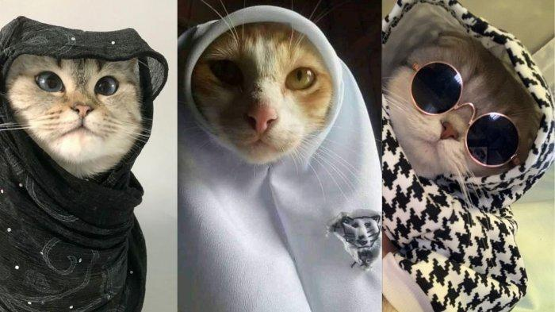
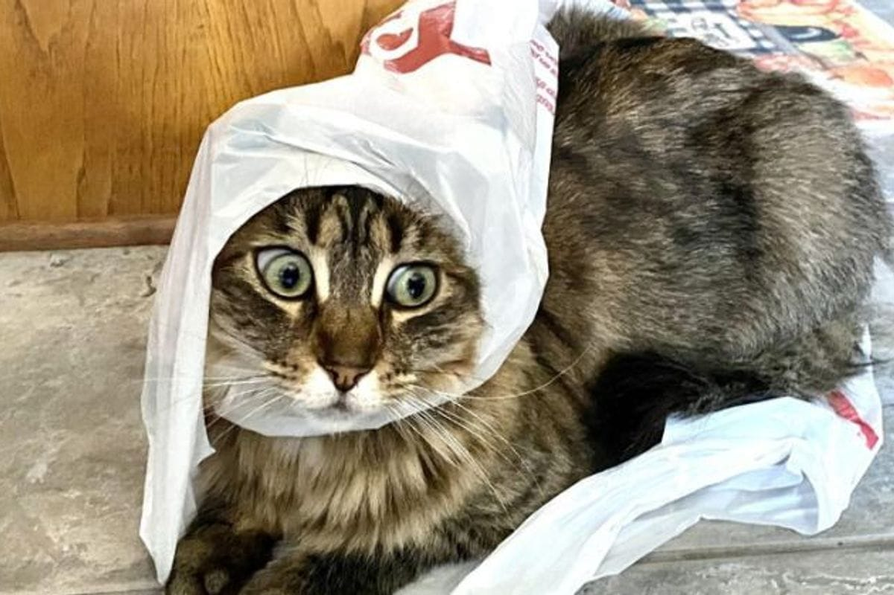
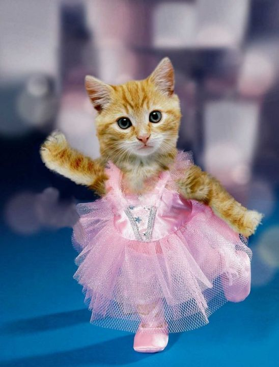

Cats are very aesthetically attractive animals. They have a beautyful body shape, with graceful curves and flexible movement. Their smooth fur and varied colors and patterns add to the cat's visual appeal. Apart from that, the cat's facial expression, which seems always calm and full of mystery, also has its own charm. From an aesthetic point of view, cats can be seen as a representation of balance, harmony and perfection of form. A cat's agile and graceful movements reflect aesthetic principles such as rhythm, proportion, and harmony. Cat's are also often considered symbols of elegance, poise, and independence-values valued in many aesthetic traditions. In art and design, cat's are often used as a motif or inspiration because of their beauty and visual appeal. The shape and pattern of a cat's fur, as well as its facial expressions, have been widely explored by artist and designers to create aesthetic works. Philosophically, cat's can also be seen as representing the balance between independence and dependence. The independent nature of cat's, but also the need for affection, reflects the complexity and beauty of life.
ini ceritanya buat menjelaskan gambar apakah yang ada dibawah ini
  ini ceritanya buat menjelaskan gambar apakah yang ada dibawah ini